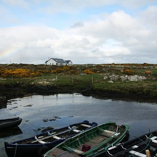
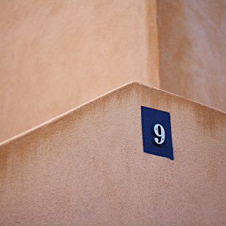

Check alternate text for images
This page provides fake content with images, some have a correct alt attribute, some don't, some have an empty alt.
This enables us to test the checkalts module.
References
- http://references.modernisation.gouv.fr/rgaa/criteres.html#crit-1-1
- http://references.modernisation.gouv.fr/rgaa/criteres.html#crit-1-2
- http://www.accede-web.com/notices/html-css-javascript/6-images-icones/6-3-balise-img/
- http://www.w3.org/WAI/tutorials/images/decision-tree/
- http://www.w3.org/TR/html51/semantics.html#alt
- http://www.w3.org/TR/WCAG20/#text-equiv-all
- http://www.w3.org/TR/WCAG-TECHS/H36.html
- http://www.w3.org/TR/WCAG-TECHS/H37.html
- http://www.w3.org/TR/WCAG-TECHS/H24.html
- http://www.w3.org/TR/WCAG-TECHS/H67.html
- http://www.w3.org/TR/WCAG-TECHS/F39.html
- http://www.w3.org/TR/WCAG-TECHS/F38.html
- http://www.w3.org/TR/WCAG-TECHS/F65.html
No alt, no title
 †
†
<img src="static/checkalts/1.jpg" /><span>†</span>One alt, one title
 †
†
<img alt="A typewriter" title="Last day of August" src="static/checkalts/2.jpg" /><span>†</span>Empty alt, no title
 †
†
<img alt="" src="static/checkalts/3.jpg" /><span>†</span>One alt, no title
 †
†
<img src="static/checkalts/4.jpg" alt="Sunset" /><span>†</span>No alt, no title
 †
†
<img src="static/checkalts/5.jpg" /><span>†</span>One alt, no title
†
<img alt="Irish river" src="static/checkalts/6.jpg" /><span>†</span>No alt, no title
†
<img src="static/checkalts/7.jpg"><span>†</span>